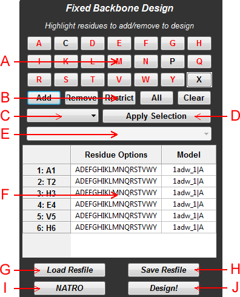

Abstract: The aim of the fixed backbone panel is to provide the user with easy-to-use tools to set up a fixed backbone design run in Rosetta. Only one model can be designed at a time so if the user attempts to add residue positions from multiple models, the new model will overwrite the previous model's data.

Figure 1: Schematic of the fixed backbone design panel
A: Residue Add Options - This region contains toggle-able buttons for indicating which amino acids will be available at added positions. Only the red residues will be added. The "X" button easily selects all residue types or deselects all residue types. If nothing is selected, added positions will default to only select wildtype at that position. In Figure 1, all added designed positions will allow any amino acid except C and P.
B: Position Add Options - Buttons to control adding and removing designable positions to the resfile. "Add" adds the current selection from the sequence viewer defaulting to the options specified in the residue add options panel. "Remove" removes the selected residues from the resfile. "Restrict" causes the resfile to include only the selected residues and remove all other positions. "All" adds every position on the current selected model to the resfile. "Clear" removes everything from the resfile.
C: Position List - A list containing all positions in the resfile. Select a position in this list to alter the list of available amino acid types at this position. Alternatively, you may click on the resfile directly to select positions.
D: Apply Selection - Change the selected resfile position to use the list of amino acids currently specified in the residue add options
E: Scoretype Menu - Specify the scoretype by which to color residues after completion of a design.
F: Resfile - A table showing which positions will be designed along with the list of amino acids available at each position. After design, the positions will be colored proportionately according to Rosetta scores and the labels will indicate which amino acid was selected (e.g. V5 will become V5W if position 5 was mutated from V to W). The table is clickable to easily view and select resfile positions.
G: Load Resfile - Easily populate the resfile table with information from a saved resfile.
H: Save Resfile - Save the current resfile data to a file for easy access at a later time.
I: Default Button - Click this button to toggle between "NATRO" and "NATAA." The option of this button defines the behavior of all residues not specified in the resfile. NATRO indicates that these positions will not be touched at all. NATAA indicates that these unspecified positions cannot change amino acid type but can change rotamers.
J: Design/Finalize Button - Click this button to start the fixed backbone design job. After a design is completed, this button becomes the Finalize button to either accept or reject the output of the design.